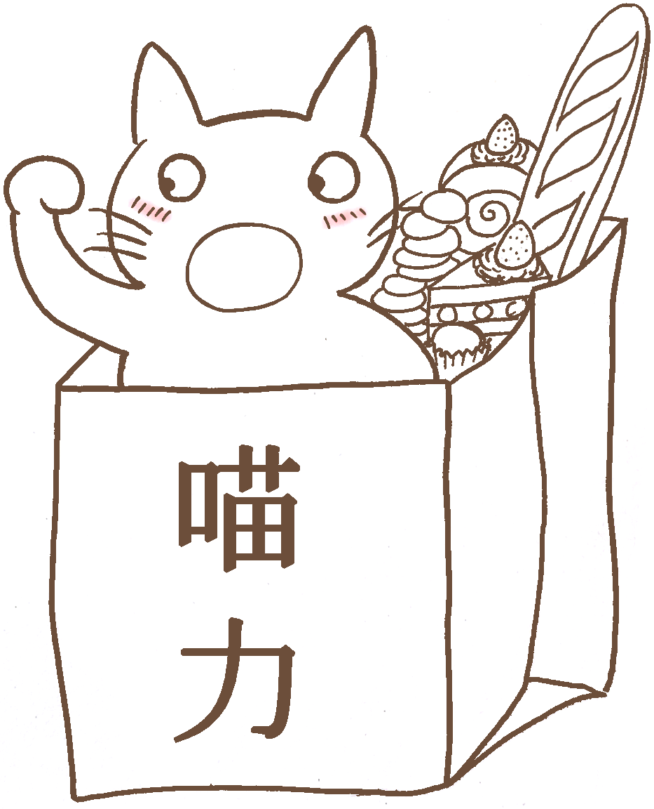

{% extends "base.html" %}
{% load staticfiles %}
{% block content %}
{% block title %}關於喵力{% endblock %}
關於喵力
像隻貓的微小力量，深信能藉由甜點將平常幸福的滋味帶給大家
「甜點」好像有種魔力，比雞湯更有神力！
像是上班日的下午，老闆或主管請員工吃一塊蛋糕，會有種瞬間充飽電的小幸福感。
下班回家後的晚上，在飯後或是洗完澡後，吃個布丁或司康，會覺得這一天辛苦全都值得，明天可以繼續再戰！
但在網路上購買甜點，有時並不會買那麼大量，為了省運費我們有時會想找同事、朋友一起訂購。
但擔當起團長又要負責統整大家的訂單好煩雜，所以喵力特別設計團購選單直接為大家整理好團購表單啦！
我們堅持使用高級食材，無色素、香精添加物，帶著為某人而做的溫暖心意純手工製作，希望藉由像隻貓微小的力量帶給大家滿滿幸福的滋味！
現在開始想吃就吃，希望喵力能帶給你一整天的好心情！
{% endblock %}